① 14-1 有效需求理論（Effective Demand Theory）
• 1929 年前（古典學派）：信奉賽伊法則（Say's Law，即「供給創造其自身需求」）。認為充分就業是常態，透過價格機能靈活調整，市場自動趨於均衡，絕不可能發生長期普遍性失業。
• 1929 年經濟大恐慌：全球陷入嚴重經濟衰退，美國失業率飆至 25%，物價狂跌，古典學派無力解釋。
• 1936 年凱因斯（J. M. Keynes）：發表《就業、利息與貨幣的一般理論》，指出在未充分就業下，「需求創造其自身供給」，均衡國民所得水準是由「有效需求（Effective Demand）」的大小來決定！
一、有效需求的構成（封閉經濟體系）
有效需求是指在不同所得水準下，社會各部門「有購買意願且有支付能力」的總需求。在封閉經濟體系中，有效需求由三大部門支出所構成：
- 家計部門的消費支出（C）
- 企業部門的投資支出（I）
- 政府部門的政府支出（G）
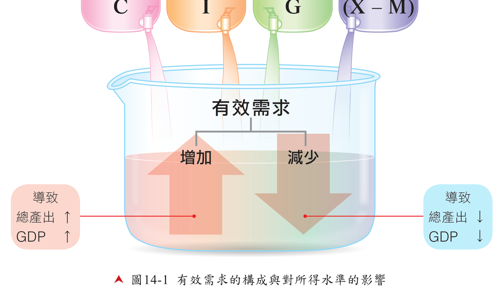
② 14-2-1 & 14-2-2 消費與儲蓄函數（傾向指標精解）
家計部門的可支配所得 Yd 只有兩個去處：不是用於消費 C，就是用於儲蓄 S，即：Yd ＝ C ＋ S。
一、基本消費心理法則與消費函數
當社會的可支配所得增加時，民間消費支出也會增加，但消費增加的幅度小於所得增加的幅度（因為人會把部分增額存起來）。因此：
0 ＜ 邊際消費傾向（MPC） ＜ 1
C ＝ a ＋ bYd （其中 a ＞ 0，0 ＜ b ＜ 1）
- a：自發性消費（Autonomous Consumption）。不受所得影響，當 Yd ＝ 0 時維持生存所需的最低支出（固定常數）。
- bYd：誘發性消費（Induced Consumption）。隨可支配所得增減而變動之消費。
- b：邊際消費傾向（MPC）。消費曲線的斜率。
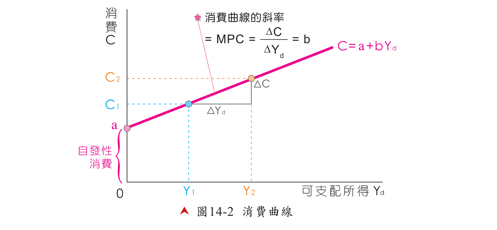
二、儲蓄函數推導
S ＝ Yd － C ＝ Yd － (a ＋ bYd) ＝ －a ＋ (1 － b)Yd
- －a：自發性負儲蓄。當 Yd ＝ 0 時動用原有儲蓄或舉債借款的金額（絕對值等於自發性消費）。
- 1 － b：邊際儲蓄傾向（MPS）。儲蓄曲線的斜率。
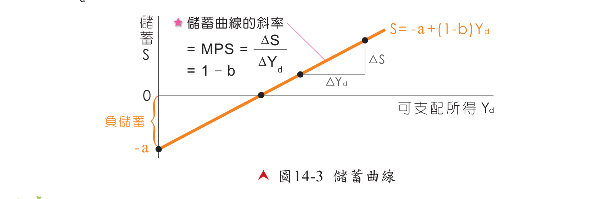
三、四大傾向指標深層對照（統測必考公式）
| 指標名稱 | 定義與數學公式 | 隨所得增加之走勢 | 兩者大小關係 |
|---|---|---|---|
| 平均消費傾向（APC） | APC ＝ CYd ＝ aYd ＋ b 每 1 單位可支配所得中用於消費的比例 |
隨所得增加而遞減 | APC ＞ MPC （因 a/Yd ＞ 0） |
| 邊際消費傾向（MPC） | MPC ＝ ΔCΔYd ＝ b 每增加 1 單位所得所引起的消費增量 |
在線性模型中為固定常數（0 ＜ b ＜ 1） | |
| 平均儲蓄傾向（APS） | APS ＝ SYd ＝ －aYd ＋ (1 － b) 每 1 單位可支配所得中用於儲蓄的比例 |
隨所得增加而遞增 | APS ＜ MPS （因 －a/Yd ＜ 0） |
| 邊際儲蓄傾向（MPS） | MPS ＝ ΔSΔYd ＝ 1 － b 每增加 1 單位所得所引起的儲蓄增量 |
在線性模型中為固定常數（0 ＜ MPS ＜ 1） |
③ 14-2-3 & 14-2-4 45度線與損益平衡點（消費、儲蓄與所得關係）
一、傾向相加總和定理
1. APC ＋ APS ＝ 1 （每塊錢的所得不是消費就是儲蓄）
2. MPC ＋ MPS ＝ 1 （每增加一塊錢的所得增量，不是多花就是多存）
二、45º 輔助線與收支平衡點（損益平衡點，Break-even Point）
45º 線是由原點出發的幾何輔助線，線上任一點的縱座標均等於橫座標，即 Yd ＝ C。
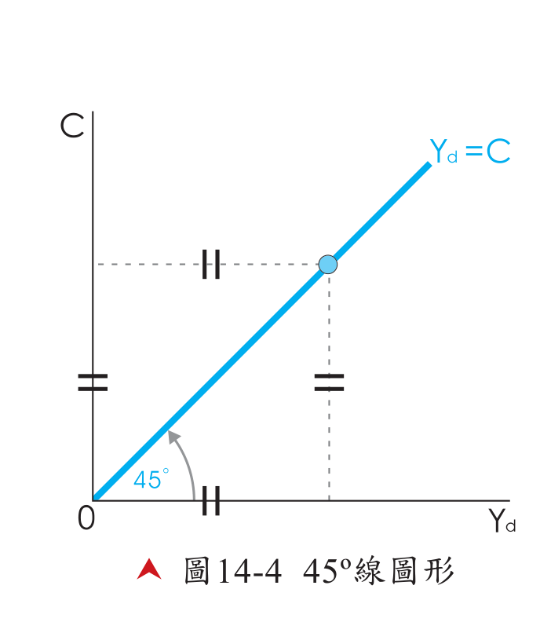
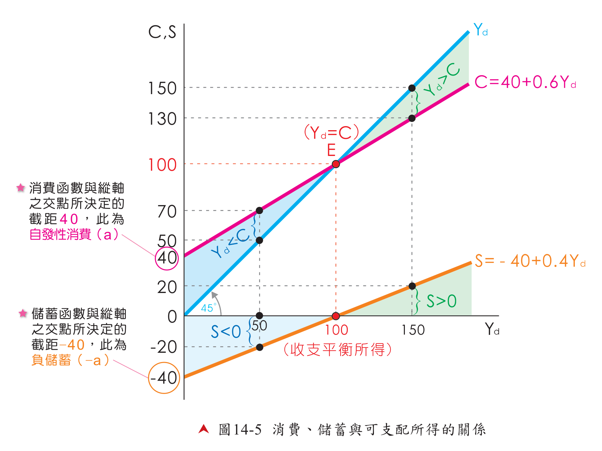
三、課本表 14-1 三大區間全景對比表
| 所得區間狀態 | 消費線與 45º 線位置 | 儲蓄 S 狀態 | APC 與 1 的大小 | APS 與 0 的大小 | 日常生活經濟行為 |
|---|---|---|---|---|---|
| Yd ＜ C（平衡點左側） | 消費線在 45º 線上方 | 負儲蓄（S ＜ 0） | APC ＞ 1 | APS ＜ 0 | 入不敷出、舉債度日、動用老本 |
| Yd ＝ C（收支平衡點 E） | 消費線與 45º 線相交 | 零儲蓄（S ＝ 0） | APC ＝ 1 | APS ＝ 0 | 收支相抵、月光族（賺多少花多少） |
| Yd ＞ C（平衡點右側） | 消費線在 45º 線下方 | 正儲蓄（S ＞ 0） | APC ＜ 1 | APS ＞ 0 | 所得有餘裕、累積存款與財富 |
低所得者（窮人）的 MPC 大於高所得者（富人）。因此，若一國政府實施財富重分配政策（如累進所得稅、補助弱勢），使所得分配更平均，將促使全國總消費支出增加！
④ 14-3 投資與投資邊際效率（MEI，Marginal Efficiency of Investment）
經濟學探討的投資指實體資本形成（添購新機器設備、興建新廠房、新增存貨）。在簡單凱因斯模型中，假設投資全屬自發性投資（I ＝ I0），不受所得影響，為一水平線。
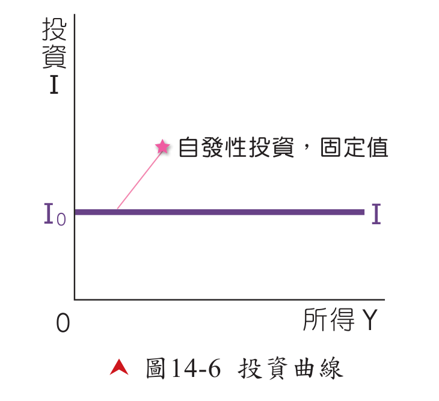
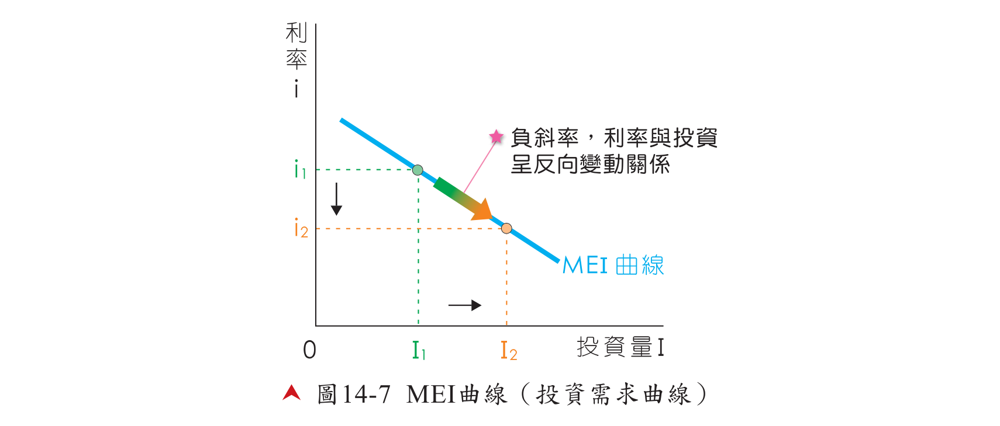
一、投資邊際效率（MEI，公式 14-8）
使資本資產未來預期年淨收入之現值總和，恰好等於該資產重置購置成本（C）之折現率（MEI）：
C ＝ R1 ＋ MEI ➔ MEI ＝ RC － 1 （其中 R 為預期淨收入，C 為購置成本）
二、企業投資決策三大準則（統測高頻題）
因此，市場利率愈高，符合 MEI ＞ i 的計畫愈少，全社會投資需求量愈少；反之利率愈低，投資量愈多。故 MEI 曲線即為廠商的「投資需求曲線」，呈現負斜率！
⑤ 14-4 簡單凱因斯兩部門均衡所得決定過程
在簡單凱因斯模型中，體系僅包含「家計部門（消費 C）」與「企業部門（投資 I）」，且假設未達充分就業、物價與利率不變。
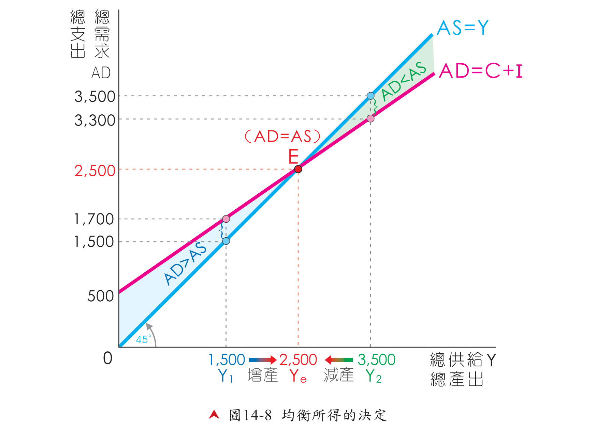
一、兩大均衡分析法與非自願存貨調整機制
| 分析方法 | 均衡條件方程式 | 當產出過剩（Y ＞ Ye） | 當產出不足（Y ＜ Ye） |
|---|---|---|---|
| 總支出法（AD ＝ AS） | Y ＝ C ＋ I 總供給線（45º 線）與總需求線（C ＋ I）之交點 |
總需求不足（AD ＜ AS），商品賣不出去 | 總需求過盛（AD ＞ AS），市面供不應求 |
| 漏出注入法 | 漏出（S）＝ 注入（I） | 儲蓄大於投資（S ＞ I） | 投資大於儲蓄（I ＞ S） |
| 存貨非自願變動機制 | 非自願存貨變動 ＝ 0 | 非自願存貨增加 ➔ 廠商減產裁員 ➔ 產出下降至 Ye | 非自願存貨減少 ➔ 廠商擴大增產 ➔ 產出上升至 Ye |
二、均衡所得代數求法（公式 14-10）
已知 C ＝ a ＋ bY，I ＝ I0，均衡時 Y ＝ C ＋ I：
Y ＝ a ＋ bY ＋ I0 ➔ (1 － b)Y ＝ a ＋ I0 ➔ Ye ＝ a ＋ I01 － b ＝ a ＋ I0MPS
⑥ 14-5 乘數原理與 14-7 節儉的矛盾（Paradox of Thrift）
一、乘數原理（Multiplier Principle，公式 14-11）
在未充分就業下，任何自發性支出變動（如投資增加 ΔI），會透過經濟循環引發所得呈「倍數」的擴張。
KI ＝ ΔYΔI ＝ 11 － b ＝ 11 － MPC ＝ 1MPS
總所得變動量：ΔY ＝ KI × ΔI ＝ ΔIMPS
• MPC 愈大（MPS 愈小）➔ 乘數 KI 愈大 ➔ 創造的國民所得增額愈大！
• 例：若 MPC ＝ 0.8，則 KI ＝ 1 / (1 － 0.8) ＝ 5；投資每增加 10 億，國民所得增加 50 億元！
二、14-7 節儉的矛盾（Paradox of Thrift）
凱因斯指出：節儉對個人雖能累積財富，但在未充分就業社會，人人試圖增加儲蓄將引發災難！
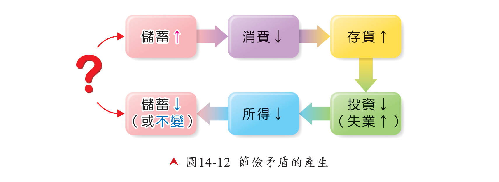
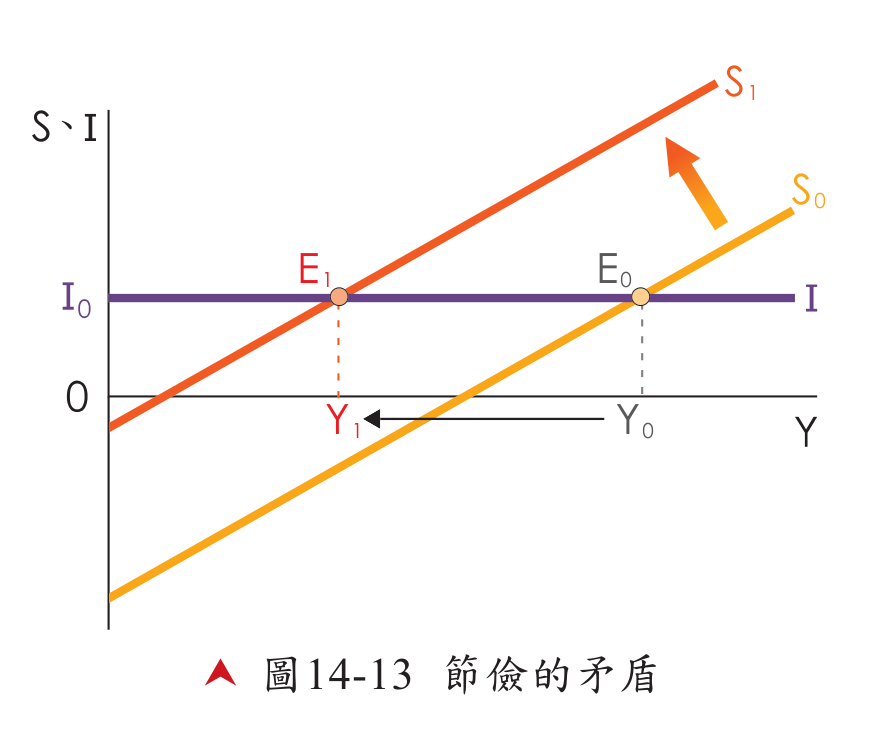
⑦ 14-6 膨脹缺口與緊縮缺口（幾何與代數測量）
當實際均衡所得 Ye 與維持充分就業的所得水準 Yf 不一致時，社會將產生「缺口」：
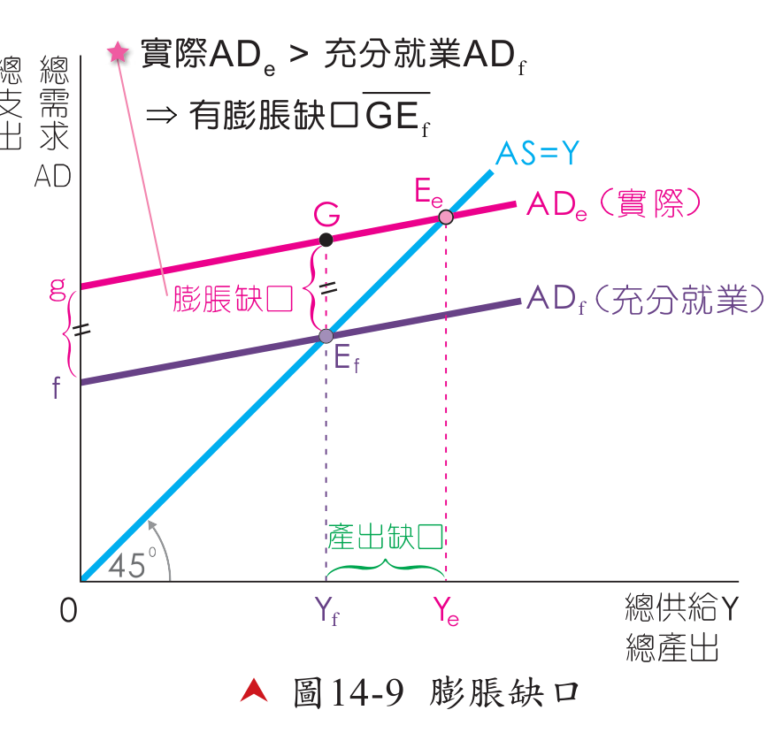
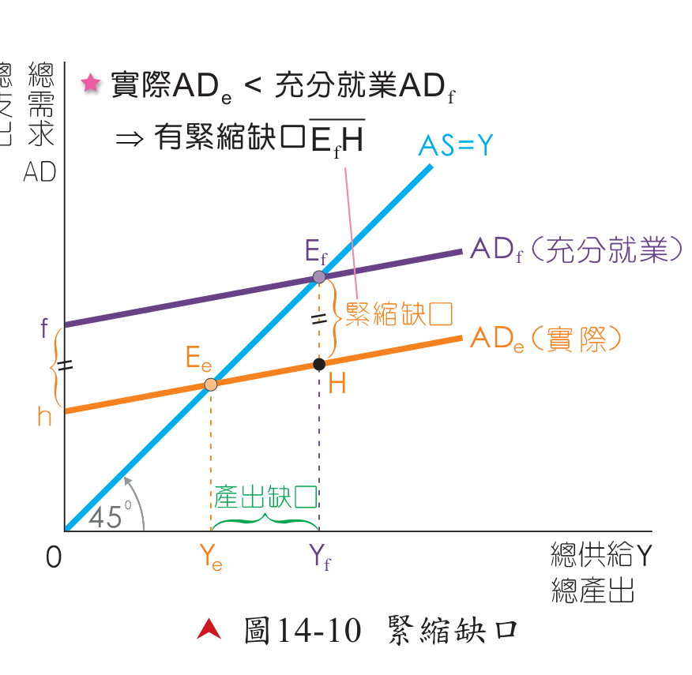
一、膨脹缺口 vs 緊縮缺口對照矩陣
| 比較項目 | 膨脹缺口（Inflationary Gap） | 緊縮缺口（Deflationary Gap） |
|---|---|---|
| 所得水準關係 | Ye ＞ Yf（均衡所得超過充分就業水準） | Ye ＜ Yf（均衡所得低於充分就業水準） |
| 總需求現況 | 實際 ADe ＞ 充分就業 ADf（有效需求過度） | 實際 ADe ＜ 充分就業 ADf（有效需求不足） |
| 經濟現象 | 景氣過熱、工資飆漲、引發物價膨脹（通貨膨脹） | 景氣蕭條、產能過剩、大量失業 |
| 缺口垂直距離公式 | 膨脹缺口 ＝ Ye － YfK ＝ (Ye － Yf) × MPS | 緊縮缺口 ＝ Yf － YeK ＝ (Yf － Ye) × MPS |
| 政府因應對策 | 緊縮性財政政策：減少政府支出（ΔG ＜ 0）或增加租稅（ΔT ＞ 0） | 擴張性財政政策：增加公共支出（ΔG ＞ 0）或發行振興券、減稅 |
⑧ 14-8 加入政府部門的凱因斯模型與各項乘數（三部門模型）
加入政府部門後，總需求由家計（C）、企業（I）與政府（G）三者組成。家計部門的可支配所得變為扣除稅收 T 後的餘額：Yd ＝ Y － T。
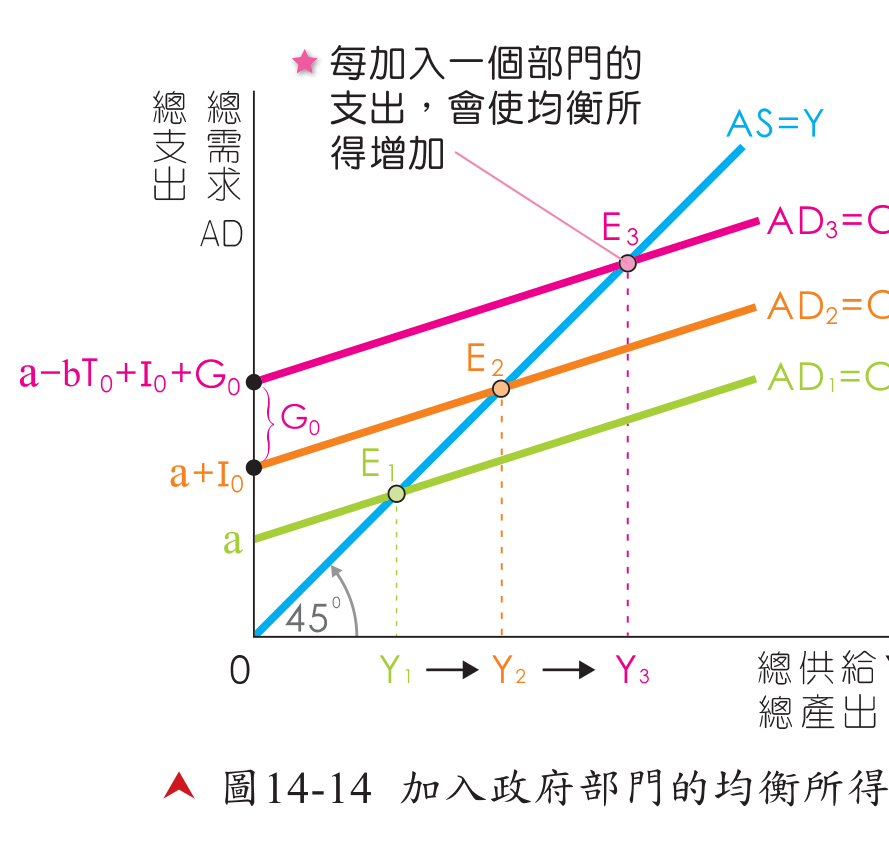
一、三部門均衡所得求解（採定額稅 T0）
模型：Y ＝ C ＋ I ＋ G，其中 C ＝ a ＋ b(Y － T0)，I ＝ I0，G ＝ G0
Ye ＝ a － bT0 ＋ I0 ＋ G01 － b
二、政府各項財政政策乘數大全（統測必考大對照）
| 乘數類型 | 代號與公式 | 經濟意義與數值範例（設 MPC ＝ 0.75） |
|---|---|---|
| 政府支出乘數 | KG ＝ ΔYΔG ＝ 11 － b ＝ 1MPS | 政府每增加 1 元公共支出所帶動的所得增量。 例：KG ＝ 1 / 0.25 ＝ 4（增加 10 億支出，所得增加 40 億）。 |
| 政府租稅乘數（定額稅） | KT ＝ ΔYΔT ＝ －b1 － b ＝ －MPCMPS | 政府每加稅 1 元所造成的所得萎縮量（負值）。 例：KT ＝ －0.75 / 0.25 ＝ －3（加稅 10 億，所得減少 30 億）。 |
| 政府移轉支付乘數 | KR ＝ ΔYΔR ＝ b1 － b ＝ MPCMPS | 政府發放津貼救濟金之乘數效應（正值但小於政府支出乘數）。 例：KR ＝ 0.75 / 0.25 ＝ 3。 |
| 平衡預算乘數 | KB ＝ KG ＋ KT ＝ 1 － b1 － b ＝ 1 | 當政府同時同額同方向增加支出與增稅（ΔG ＝ ΔT）時，平衡預算乘數永遠等於 1！所得增加量剛好等於政府支出增額（ΔY ＝ ΔG）。 |
因為政府增加支出 G 是「直接 100%」投入市場成為第一期有效需求；而政府減稅 T 給民眾時，民眾會先將一部分「儲蓄起來（存下 MPS）」，只有誘發消費部分（bΔT）進入市場，因此稅收乘數的效果必然小於支出乘數！
⑨ 課本原題即測即評 (8 題精選互動測驗)
嚴選課本課後習題與綜合情境題，點擊選項立即獲得即時評分、詳盡解析與統測避坑提示：